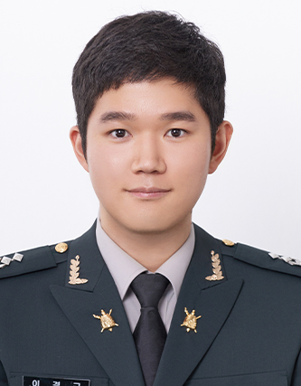

Political Scientist
Kyung Gu Lee
Assistant Professor, Department of Political Science and Sociology
Korea Military Academy · Seoul, South Korea
I am a political scientist specializing in comparative and international political economy, with a regional focus on East Asia — particularly Japan, Korea, and Taiwan. My research examines electoral institutions, party strategy, and the political economy of redistribution, trade and finance, using quantitative and qualitative methods.

Interests
Research
My research sits at the intersection of comparative and international political economy,
with a focus on how electoral institutions shape party strategies and political outcomes
in East Asian Democracies. A central strand of my work investigates how electoral institutions shapes the strategic decisionmaking of politicians.
For instance, how does the Mixed-Member system of Japanese Diet elections creates incentives for parties to field non-viable single-member district candidates, and crowd the district race, or how does the ruling party distribute geographically targetted goods in order to gain the most electoral benefits.
A second line of research examines the politics of North Korea: their political discourse and the strategies they employ domestically and externally for their survival. I employ a range of quantitative
methods, including panel regression with propensity score weighting, topic modeling,
and network centrality analysis, as well as an in-depth case study of the causal mechanism studied. My work has appeared in Pacific Affairs,
the Japanese Journal of Political Science, and North Korean Studies Review.
Scholarship
Working Papers & Publications
-
Forthcoming
Strategic Oversupply: Non-majority Seeking Parties and Contamination Effects in Japan's Mixed-Member Majoritarian Elections
Japanese Journal of Political Science, forthcoming
This paper examines contamination effects in Japan's mixed-member majoritarian (MMM) electoral system, focusing on non-majority seeking parties such as the JCP, JIP, DPFP, CDP, and Reiwa Shinsengumi. Using electoral data from 2013 to 2025 and a two-way fixed effects panel regression with propensity score weighting, I find that fielding a candidate in the single-member district (SMD) tier significantly boosts a party's proportional representation (PR) vote share. The effect varies substantially by party and candidate quality: credentialed candidates — those with prior political or professional experience — generate larger contamination effects than non-credentialed candidates. Survey evidence further shows that voters who weigh candidate characteristics are more responsive to candidate presence, except in the case of the JCP, where high-quality candidate exposure can reduce support. These findings illuminate the collective action dilemmas that contamination creates among opposition parties and help explain the persistent fragmentation of Japan's party system. -
Published
The Mountain Is Moving, but Where To? Japan's 2025 Upper House Election and the Future of Japanese Politics
Pacific Affairs, Vol. 99, Issue 1, pp. 102–117, 2026
This perspective analyzes the 2025 House of Councillors election in Japan, which ended the Liberal Democratic Party (LDP)–Komeito coalition’s majority in both houses of the Diet. While not producing an opposition government, the outcome created a hung parliament and deepened political uncertainty. The LDP’s defeat reflected a convergence of factors: the slush fund scandal, Prime Minister Ishiba Shigeru’s blunders, and public dissatisfaction with rising inflation and rice prices. The election was also marked by the rise of populist challengers. The right-wing Sanseito won over 12 percent of the proportional vote, drawing support from former LDP voters, while the Democratic Party For The People expanded its profile as a pragmatic alternative. These developments suggest a gradual erosion of LDP dominance and a shift to multi-party system. The article concludes by assessing the aftermaths of the election and the implications for Japanese politics. -
Published
From Nation to State: Topic Model Analysis and Network Centrality Analysis of Nationalistic Discourse in the Rodong Sinmun
North Korean Studies Review, Vol. 29, Issue 1, pp. 45–78, 2025 (In Korean)
How is discourse about nationalism utilized in North Korea, and what patterns of change has it undergone? While interest in North Korea’s nationalistic discourse has grown since the regime’s declaration of “two Koreas” and hostile relations with South Korea, the interpretation and use of the concept of “nation” have been politically significant since the regime’s inception. This study examines the evolution of national discourse under the Kim Jong-un regime, employing topic modeling and network centrality analysis of North Korea’s Rodong Sinmun newspaper from 2012 to 2019. Key findings reveal that North Korean national discourse adapts dynamically to political events and regime priorities, with the concept of nation assuming varying importance during nuclear tests and inter-Korean dialogue periods. Initially, discourse centered on nation, peace, and unification, but after the 2017 declaration of state nuclear force completion, nationalistic discourse gradually diminished, while discourse focused on “state” and “homeland” became more prominent. This study highlights the flexibility of North Korea’s use of nationalist rhetoric as a tool for governance, suggesting that the regime’s nationalistic discourse will continue to evolve in response to political needs in the future. Moreover, the weakening of nationalist discourse in North Korea, coupled with the decline of national consciousness in South Korea, poses a challenge to existing unification policies grounded in national identity. However, rather than hastily discarding the concept of national unification, a more cautious approach is needed—one that takes into account the national consciousness of the North Korean populace. -
Working Paper
Core or Swing? The Strategic Allocation of Subsidies in Japanese Electoral Politics
Presented at the 2025 International Political Science Association (IPSA) World Congress
This paper investigates how governing parties in Japan strategically allocate subsidies across electoral districts. Drawing on the distributive politics literature, it examines whether the LDP targets core supporters or swing districts with intergovernmental transfers, and how the mixed-member majoritarian system shapes these incentives across the SMD and PR tiers.
Curriculum Vitae
Academic Profile
Education
Academic Positions
Teaching
Honors & Awards
Grants & Scholarships
Languages & Skills
Get in Touch
Contact
Seoul, South Korea